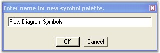
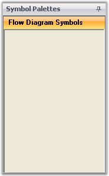
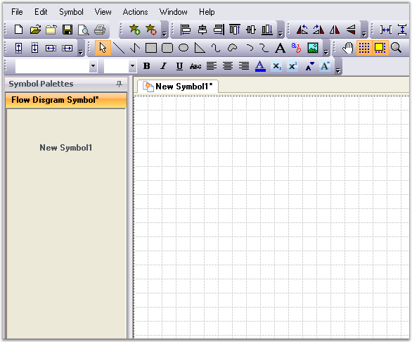
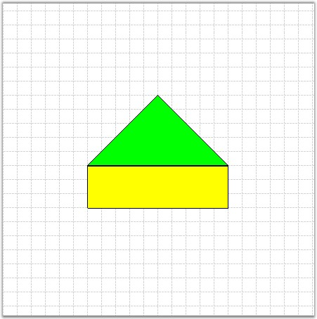
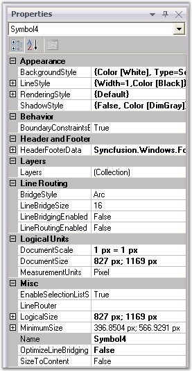
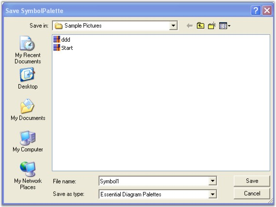
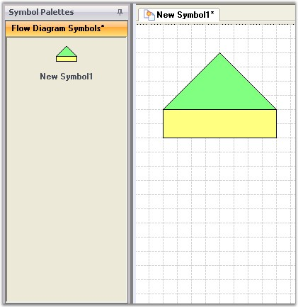
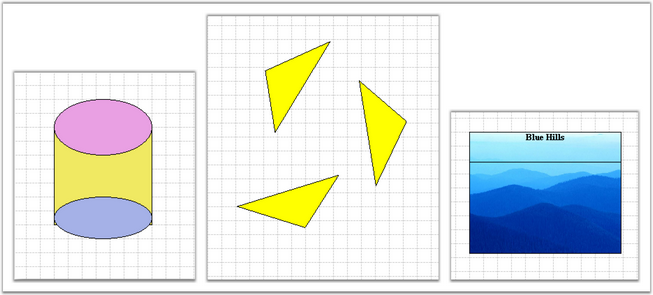
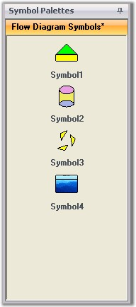

Symbol Designer application allows to create new palettes with symbols, and also modify the existing palettes. These palettes have the *.edp extension. You can use these palettes in your applications, and also in the Diagram Builder.
Software Path
..\..\Syncfusion\Essential Studio\<Version Number>\utilities\Diagram\Symbol Designer
Creating EDP File
To create our own custom symbols in the symbol designer, follow the procedure given below.
· Open the Symbol Designer tool which is available in the above software path.
· Symbol designer contains below three sections,
a. Symbol palette
b. Object model
c. Properties Window
· If you want to create a new palette, select New option in the File menu. Ttype a name for the palette as shown in the below sample and click OK.

Figure 24: New Symbol Palette Dialog Box
· A new symbol palette is created with the given name. Now, you can add your own symbols into this palette.

Figure 25: Flow Diagram Symbol Palette
· For creating a new symbol, click Add Symbol option in the Symbol menu. The symbol designer window changes to a new format as shown in the below screen shot.

Figure 26: Symbol Designer With New Symbol
· Draw the desired shapes in the grid area. Change the properties of the shapes using Property window (Example: Color, Size etc).

Figure 27: Symbol

Figure 28: Properties Window
· After modifying the default settings, we have to save this symbol into the symbol palette. Go to the File menu and click Save. A Save SumbolPalette dialog will appear as in the following screen shot.

Figure 29: Save SymbolPalette Dialog
· Give a relevant file name for the palette and click Save. As the palette is saved, new symbol is automatically loaded into the symbol palette.
· You can modify the custom symbols by using the Properties window. Click the New Symbol1 in the Symbol Palettes to view the properties. Change the name of the symbol by using the Name property.

Figure 30: Symbol Palette With New Symbol
· Repeat the steps 3 to 7 for creating more symbols.
· If you create symbols using more than one shapes, you need to group all the shapes into single symbol using the Group option in symbol designer.

Figure 31: Different Symbols
· The above symbols are added to the symbol palette. You will get a symbol palette as shown in the following screen shot.

Figure 32: Symbol Palette with New Symbols
· Finally Save the Flow Diagram Symbol Palette. Now the above symbols will be available in .edp file format. You can re-use this in your applications and in the Diagram Builder.